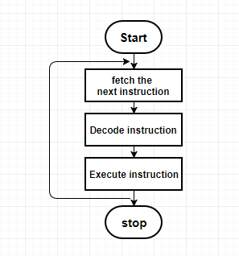

- An instruction cycle is the basic operational process of a computer.
- It is also called as fetch–decode–execute cycle.
- A program consists of set of instructions which are performed by the processor.
- To process an instruction processor performs:
- The processor fetches an instruction.
- The processor decodes an instruction.
- The processor executes an instruction.

- Instruction Fetch cycle : In this cycle, an instruction is fetched i.e read from memory location whose address is stored in PC.
This instruction is placed in the Instruction register(IR).
- Instruction Decode cycle : In this cycle, the opcode of an instruction is decoded to determine which operation is to be performed.
- Instruction Execution cycle : In this cycle, the specific operation is performed by the processor.This often involves performing arithmetic and logical operations & storing the result in destination location.
During execution of current instruction PC counter gets incremented and next instruction is fetched in fetch cycle.